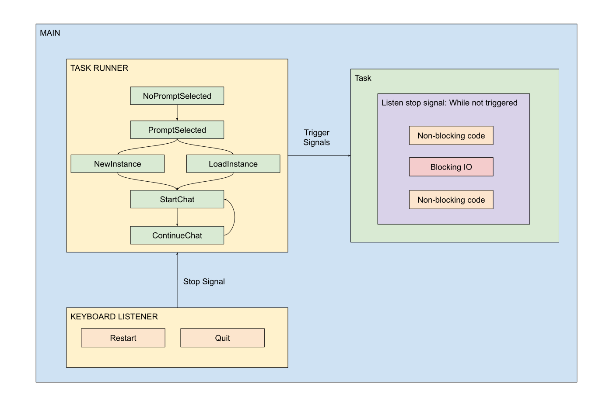

Design and Architecture
This document lists the design and architectural decisions taken during the development of LLM Assistant. It follows the Architecture Decisions format.
Task Runner
Date: (2024-07-14)

Context
We want to implement a command line chat session. This interface should allow someone to:
select a previously written templated-prompt;
create instances of a prompt (by setting its template variable values);
load instances;
accept messages and return the prompt responses like in a chat.
Decision
Create an engine to execute the states of the chat session given by a pre-defined protocol.
The engine is the TaskRunner class and the communication protocol is the TaskInstruction class. A TaskRunner is instantiated and we add TaskInstructions to it before calling its run method.
tr = TaskRunner()
tr.add( TaskInstruction("t1", t1))
tr.add( TaskInstruction("t2", t2))
tr.run()
Remarks
The TaskRunner runs in a single thread;
The TaskInstruction function return itself a TaskInstruction, self-feeding the TaskRunner.
The TaskRunner can send stop signals to a Task, for example, a blocking one. The task itself should handle the signal.
Status
Done.
Consequences
This is an independent module and it will not have consequences over the rest of the project.
Remarks
I realized later that this solution is very similar to the event loop implemented in the asyncio library and I might refactor this module in the future in order to use asyncio.